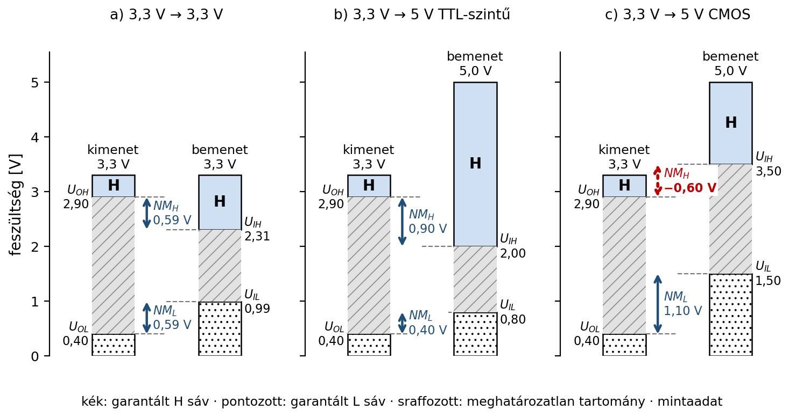
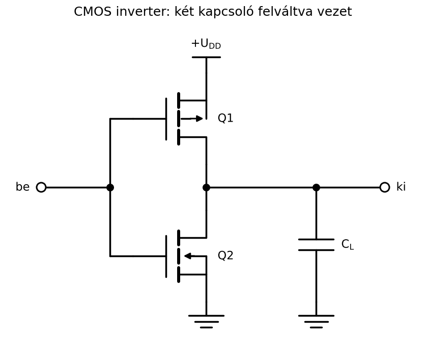
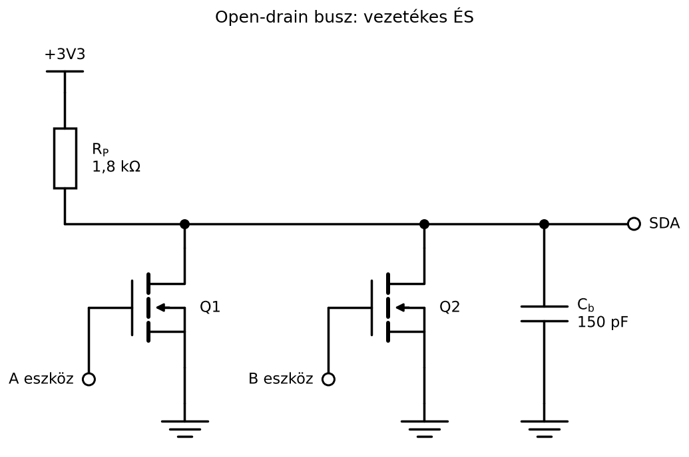

Ebben az alfejezetben megtanulod:
A szenzormodul mikrovezérlőjéhez (3,3 V) külső bővítőkártyát szeretnénk csatlakoztatni: rajta egy érzékelő, amely I²C-n beszél, és egy régebbi, 5 V-os logikai IC. Az I²C (kimondva „i-négyzet-cé”) kétvezetékes soros busz: az SDA vezetéken az adat, az SCL vezetéken az órajel halad, és több eszköz osztozik ugyanazon a két vezetéken.
Bekötés után a tipikus panaszok: „néha működik”, „a mikrovezérlő pinje magasat küld, a másik IC alacsonynak olvassa”, „400 kHz-en hibázik, 100 kHz-en nem”. Egyik sem programhiba. A digitális jel valójában analóg feszültség, amelyre egyezményes szabályok vonatkoznak: mekkora feszültség számít magasnak (logikai 1, H) és alacsonynak (logikai 0, L), milyen gyorsan kell átjutni egyikből a másikba, és mekkora áramot kell közben elbírni.
Gondolj egy digitális vonalra úgy, mint egy ajtóra két ütközővel: „zárva” és „nyitva”. A köztes helyzet nem jelent semmit. A küldő (kimenet) megígéri, hogy a jelet határozottan az egyik ütközőig viszi; a vevő (bemenet) pedig megígéri, hogy egy szélesebb sávot is elfogad. A kettő közötti különbség a zajtartalék: ennyi zavar rakódhat a jelre, mielőtt a vevő tévedne. Az analógia ott sántít, hogy a feszültség nem ugrik: minden átmenet időt vesz igénybe, és közben a vevő bemenete a tiltott sávban jár.

Az ábrán a bal oszlop mindig a 3,3 V-os kimenet, a jobb a vevő bemenete. A c) esetben a kimenet garantált magas szintje (2,9 V) alatta van a vevő által elfogadott legkisebb magas szintnek (3,5 V). Lehet, hogy egy konkrét példány a próbapanelen mégis működik – de nem garantált.
A kimenet oldaláról egy CMOS (komplementer MOS, azaz p- és n-csatornás tranzisztorpárból felépülő) kimenet két kapcsoló. A felső (p-csatornás) a tápsínhez, az alsó (n-csatornás) a földhöz köti a kimenetet; egyszerre normál esetben csak az egyik vezet.

Ha a bemenet alacsony, a felső tranzisztor vezet, a kimenet magas; ha a bemenet magas, fordítva. Ez a legegyszerűbb logikai kapu, az inverter.
Definíció. Egy logikai család (vagy egy konkrét IC) négy garantált feszültsége:
Definíció. A zajtartalék (noise margin) a két állapotra:
Szavakkal: ennyi zavarfeszültség adódhat a jelhez, mielőtt a vevő a tiltott sávba kerülhet. Mindkettőnek pozitívnak kell lennie; a mértékegység V. A feltétel csak akkor érvényes, ha a meghajtó árama a megadott határon belül van, és a két eszköz földje azonos potenciálon áll (a földzavar a zajtartalékot fogyasztja – erről a Földelési stratégiák és visszatérő áramutak szól).
Néhány tipikus család, mintaadatként (az adott alkatrész adatlapja a mérvadó):
| Család | |||||
|---|---|---|---|---|---|
| 1,8 V-os CMOS | 1,8 V | 0,45 V | 1,35 V | 0,63 V | 1,17 V |
| 3,3 V-os mikrovezérlő | 3,3 V | 0,4 V | 2,9 V | 0,99 V | 2,31 V |
| 5 V-os CMOS | 5 V | 0,4 V | 4,4 V | 1,5 V | 3,5 V |
| 5 V-os, TTL-szintű bemenettel | 5 V | 0,4 V | 4,4 V | 0,8 V | 2,0 V |
A CMOS küszöbök általában a tápfeszültséggel arányosak (itt és ). A TTL (tranzisztor–tranzisztor logika, régi bipoláris család) küszöbei alacsonyak és rögzítettek; a ma kapható „TTL-kompatibilis” CMOS bemenetek ezt utánozzák. Ezért tud egy 3,3 V-os kimenet szabályosan meghajtani egy TTL-szintű 5 V-os bemenetet, de egy közönséges 5 V-os CMOS bemenetet nem.
A zajtartalék csak a szinteket vizsgálja. Külön kérdés, hogy a bemenet elviseli-e a meghajtó legnagyobb feszültségét: egy 5 V-os kimenet 3,3 V-os bemeneten az abszolút határértéket sértheti (Szintillesztés, bemenetvédelem és pergésmentesítés).
Továbbvitt eredmény. Két digitális eszköz összekötése előtt ellenőrizd: , (garantált értékekkel), és a meghajtó legnagyobb szintje a vevő megengedett tartományán belül van. Ezt a Szintillesztés, bemenetvédelem és pergésmentesítés, a Mikrovezérlő GPIO illesztése terhelésekhez, a Mintavétel, kvantálás és ADC és Az EMC alapjai: forrás, csatolás, vevő használja.
A vezető kimeneti tranzisztornak ellenállása van. Egy egyszerű modell: magas állapotban -ről induló forrás soros ellenállással, alacsony állapotban a földre kötött :
Itt a kimenet árama (magasnál kifelé, alacsonynál befelé folyik). A dimenzió: A·Ω = V. Az adatlap garantált párjaiból felső becslést kapunk. A szenzormodul mintaadataival (8 mA-nél V):
Ez a Valós források, Thévenin és Norton modelljének digitális alkalmazása. A modell csak a megadott áramtartományban használható; nagy áramnál a tranzisztor ellenállása megnő.

A közös vonal csak akkor magas, ha minden eszköz elengedte – logikai ÉS kapu huzalozásból (vezetékes ÉS, wired-AND). Ütközésnél sem folyik nagy áram: a lehúzó eszközt csak a felhúzó árama terheli. Ezért használ open-draint az I²C és sok közös „megszakításkérő” vonal.
A felhúzónak két ellentétes követelménye van.
Alsó korlát – a lehúzóképesség. Lehúzott vonalnál a felhúzón esik, és ez az áram a lehúzó tranzisztorba folyik. Az nem lehet nagyobb a garantált -nál:
Felső korlát – a felfutási idő. Elengedéskor a buszkapacitás (a lábak, vezetékek, csatlakozók összes kapacitása a föld felé) az -n át töltődik (RC és RL töltés–kisütés, időállandó). Az I²C a felfutást a és szintek között méri (ellenőrizendő: UM10204). Induljunk 0 V-ról; , :
Az eredmény nem függ a kiindulási alacsony szinttől. A dimenzió: Ω·F = s. Ebből:
Ez az Elsőrendű szűrők, sávszélesség és felfutási idő 10–90%-os definíciójának rokona (), csak más szintekkel – a két számot nem szabad keverni.
A szokásos I²C-határok (ellenőrizendő: UM10204, a hatályos kiadás a mérvadó):
| Mód | Órajel legfeljebb | legfeljebb | (0,4 V-on) | |
|---|---|---|---|---|
| normál | 100 kHz | 1000 ns | 400 pF | 3 mA |
| gyors | 400 kHz | 300 ns | 400 pF | 3 mA |
| gyors plusz (Fm+) | 1 MHz | 120 ns | 550 pF | 20 mA |
Ha , nincs jó ellenállás: kisebb buszkapacitás, lassabb mód vagy erősebb buszmeghajtó (buszbuffer) kell.
Továbbvitt eredmény. Open-drain vonalon a felhúzó ablaka
ahol az összes párhuzamos felhúzó eredője. Ezt a Szintillesztés, bemenetvédelem és pergésmentesítés és a 2. záróprojekt: érzékelő-illesztő és mérőlánc használja.
Egy CMOS bemenet gate-jéhez gyakorlatilag nem folyik egyenáram, csak µA alatti szivárgás, és a bemenetnek néhány pF kapacitása van. Ha semmi nem köti meghatározott potenciálra (lebegő bemenet, floating input), a feszültségét a szivárgás és a környezetből átcsatolt zaj dönti el. Egy szivárgás egy kapacitást alatt visz el 1 V-ot (mintaadat): a szint bárhová elmászhat. A következmény: véletlen olvasások, hamis megszakítások, és – ha a feszültség a tartomány közepén áll meg – mindkét tranzisztor egyszerre vezet, keresztáram (shoot-through) folyik a tápról a földre. Ezért a nem használt bemeneteket felhúzóval, lehúzóval vagy a mikrovezérlő beállításával határozott szintre kell kötni.
Ugyanez a gond időben elnyújtva a lassú él: amíg a bemenet lassan halad át a tiltott sávon, a keresztáram tovább folyik, és a jelre ülő zaj miatt a kimenet többször is billenhet. A Schmitt-bemenet két küszöböt használ: felfelé csak -nál, lefelé csak -nál billen; a hiszterézisnél kisebb zaj nem okoz többszörös billenést (Komparátor, hiszterézis és aktív szűrők). Az I²C-eszközök bemenetei tipikusan ilyenek (adatlapfüggő). Az adatlap sok kapunál legnagyobb megengedett bemeneti él-időt ad meg; ezt a lassú RC-jelek könnyen túllépik.
A mikrovezérlők belső felhúzói nagy ellenállásúak (mintaadatunk 40 kΩ, gyakran tág tűréssel). Gombhoz, nem használt lábhoz jók, buszhoz általában nem: 150 pF-dal a felfutási idő .
Push-pull kimenetnél a felfutást és a terhelőkapacitás szabja meg. és esetén a 10–90%-os felfutási idő , akkor is, ha a jel másodpercenként csak egyszer vált. Az ilyen élben levő frekvenciák nagyságrendje MHz. A felfutási idő dönt, nem az órajel: a gyors él lassú órajelen is gyors, és áthallást, kibocsátást, reflexiót okozhat. Sok mikrovezérlőn a kimenet meredeksége (slew rate) vagy hajtáserőssége beállítható, és soros ellenállással is lassítható.
Továbbvitt eredmény. A digitális kimenet meredeksége jelintegritási tényező: a kimeneti ellenállás és a terhelőkapacitás adja (), és a Felfutási idő, sávszélesség és távvezetékek erre épít.
Adatok. V, gyors mód (400 kHz). A buszkapacitás a mikrovezérlő lába, az érzékelő lába, a csatlakozó és a vezetékezés együtt: pF (feltételezett érték). mA, V, ns.
Józanész-ellenőrzés. 1,8 kΩ és 150 pF időállandója 270 ns; a 400 kHz-es órajel félperiódusa 1,25 µs, ez bőven több a felfutásnál – hihető.
Két csapda ugyanezen a buszon. Ha a bővítőkártyán is van 1,8 kΩ felhúzó, az eredő : a lehúzóáram mA, a határ fölött. Ha pedig a külső felhúzót elhagyjuk, és a 40 kΩ-os belsőre hagyatkozunk, µs: még a normál mód 1 µs-os határát sem teljesíti.
Az elkit.extra_elch16 modul a fenti mintaszinteket és a
két korlátot tartalmazza.
from elkit import extra_elch16 as x, eseries, units
mcu = x.LEVELS["mcu33"]
for kulcs in ("mcu33", "ttl5", "cmos5", "cmos18"):
vevo = x.LEVELS[kulcs]
nmh, nml = x.noise_margins(mcu, vevo)
ok = "megfelel" if min(nmh, nml) > 0 else "NEM garantált"
if mcu.u_dd > vevo.u_dd + 0.3: # a bemenet tápjánál nagyobb szint
ok = "TÚLFESZÜLTSÉG a bemeneten"
print(f"MCU -> {vevo.name:24s} NM_H={nmh:5.2f} NM_L={nml:5.2f} {ok}")
r_min, r_max = x.pullup_limits(3.3, 0.4, 3e-3, 300e-9, x.C_BUSZ)
r = eseries.nearest((r_min * r_max) ** 0.5 * 1.15, "E24")
for r_p in (900.0, r, x.R_PU_BELSO):
tr = x.rise_time_30_70(r_p, x.C_BUSZ)
i = (3.3 - 0.4) / r_p
jo = r_min <= r_p <= r_max
print(f"R_P = {units.fmt(r_p, 'Ω'):8s} t_r = {units.fmt(tr, 's'):8s} "
f"I = {units.fmt(i, 'A'):8s} {'jó' if jo else 'HIBÁS'}")
print("ablak:", units.fmt(r_min, "Ω"), "...", units.fmt(r_max, "Ω"))MCU -> 3,3 V-os MCU NM_H= 0.59 NM_L= 0.59 megfelel
MCU -> 5 V, TTL-szintű bemenet NM_H= 0.90 NM_L= 0.40 megfelel
MCU -> 5 V-os CMOS NM_H=-0.60 NM_L= 1.10 NEM garantált
MCU -> 1,8 V-os CMOS NM_H= 1.73 NM_L= 0.23 TÚLFESZÜLTSÉG a bemeneten
R_P = 900 Ω t_r = 114 ns I = 3.22 mA HIBÁS
R_P = 1.8 kΩ t_r = 229 ns I = 1.61 mA jó
R_P = 40 kΩ t_r = 5.08 µs I = 72.5 µA HIBÁS
ablak: 967 Ω ... 2.36 kΩA negatív zajtartalék és a két hibás ellenállás megfelel a kézi
számításnak. Az utolsó pár szintjei „kijönnek”, de a 3,3 V-os kimenet az
1,8 V-os bemenet tápja fölé megy (itt egyszerűsített, 0,3 V-os
ráhagyással; a tényleges határ adatlapfüggő). A 1.15 szorzó
csak a mértani közép fölé tolja a választást (kisebb áram); a döntő a
két korlát ellenőrzése.
Az ábrán az 1 kΩ a leggyorsabb, de a korlát közvetlen közelében van; a 10 kΩ-os felhúzóval a vonal a félperiódus végéig sem éri el a 70%-ot, a vevő nem lát magas szintet.
A digitális jel analóg feszültség garantált szintekkel: , , , . Két eszköz akkor kompatibilis, ha és pozitív, és a szintek a megengedett tartományban maradnak. A CMOS kimenet két kapcsoló néhány tíz ohm ellenállással; open-drainnál csak az alsó van meg, a magas szintet felhúzó adja: . Lebegő bemenet nem maradhat; lassú élhez Schmitt-bemenet kell. A kimenet meredekségét és adja, és ez, nem az órajel dönt a jelintegritásban.
1. V, V. A magas szint nem garantált, szintillesztő kell. Fordítva (3,3 V → 1,8 V-os bemenet): a szintek elég nagyok, de a 3,3 V meghaladhatja a bemenet megengedett feszültségét (adatlapfüggő), tehát feszültségcsökkentés vagy 3,3 V-tűrő bemenet szükséges.
2. ns. Normál módban ( ns) jó, gyors módban ( ns) nem.
3. kΩ; kΩ. Választás: 2,7 kΩ (E24). ns; mA. 5%-os tűrésnél is belül marad: 2,57…2,84 kΩ.
4. A modell: osztó és 220 Ω között: V, mA. Az áram a 8 mA-es ajánlott érték fölött van, és a 2,9 V-os garantált szint sem teljesül: nagyobb ellenállás vagy meghajtó kell. (A modell itt már csak becslés, mert a megadott tartományon kívül vagyunk.)
5.
r_lo = (3.3 * 1.05 - 0.4) / 3e-3
r_hi = 300e-9 / (x.RISE_30_70 * x.C_BUSZ)
e24 = [m * 10 ** d for d in (2, 3) for m in eseries.series_values("E24")]
jok = [r for r in e24 if r * 0.95 >= r_lo and r * 1.05 <= r_hi]
print(units.fmt(r_lo, "Ω"), units.fmt(r_hi, "Ω"))
print(", ".join(units.fmt(r, "Ω") for r in jok))1.02 kΩ 2.36 kΩ
1.1 kΩ, 1.2 kΩ, 1.3 kΩ, 1.5 kΩ, 1.6 kΩ, 1.8 kΩ, 2 kΩ, 2.2 kΩA tűrések az alsó korlátot felfelé (nagyobb táp), a választható tartományt mindkét oldalról szűkítik.
6. µs, tehát a vonal ezredmásodpercek alatt bármilyen szintet felvehet. Javítás: (a) külső felhúzó, pl. 10 kΩ – az 1 µA rajta csak 10 mV-ot ejt, lenyomott gombnál 0,33 mA folyik; (b) a mikrovezérlő belső felhúzója (≈ 40 kΩ: 40 mV esés, kisebb áram, de zajra érzékenyebb). Mindkettő meghatározott szintet ad.